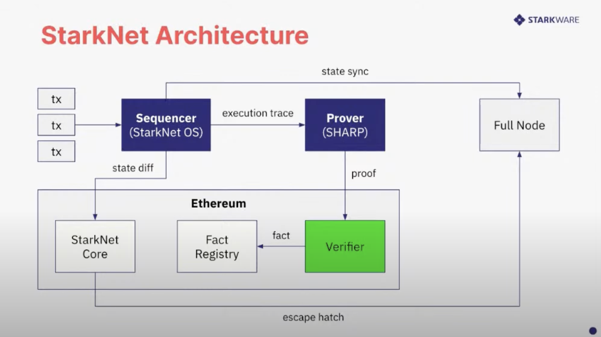

STARK
Two of the most compelling zero-knowledge technologies in the market today are zk-STARKs and zk-SNARKs. What are the differences between them? The T and the N, Scalable Transparent and Succinct Non-interactive, respectively.
STARK is mostly utilized by STARKWARE, for app specific rollups STARKEx and recently for StarkNet, a permissionless STARK-based L2 platform.
The importance tradeoffs between STARKs and SNARKs is: STARKs do not require a trusted setup, but the proof size is much larger than SNARKs.

The diagram is taken from Vitalik's blog post
Starknet architecture
I am curious about how L1 smart contract verifies STARK proofs and wrote on the Starknetbook Verifiers in Solidity but that's not even scratching the surface. The task is even more daunting when knowing that SHARP (SHARe Prover) aggregates multiple Cairo programs from different users (StarkEx, Starknet, and external users through the Cairo Playground), each containing different logic. These Cairo programs are then executed together, generating a single proof common to all the programs, it is initially sent to a STARK Verifier program written in Cairo, before sending the proof to the Solidity Verifier in Ethereum 🤯

So is there a way to prove and verify and single Cairo program? Yes.
Giza
Giza leverages the Winterfell library to prove and verify the execution of programs running on the Cairo VM. I believe that it is being used in ZeroSync, a STARK proof to sync a Bitcoin full node in an instant.
Running an example
Cairo VM
Cairo VM is the virtual machine for the Cairo language. The one using here is the Python version cairo-lang. There is breaking change from Cairo0 to Cairo1 and the VM doesn't seem to work with Cairo1 code yet (??? or I'm wrong), so the example will use the Cairo0 code.
%builtins range_check
from starkware.cairo.common.bool import TRUE, FALSE
from starkware.cairo.common.alloc import alloc
from starkware.cairo.common.math import abs_value
func compare_abs_arrays{range_check_ptr: felt}(
array_a: felt*, array_b: felt*, array_length: felt, iterator: felt
) -> (r: felt) {
if (iterator == array_length) {
return (TRUE,);
}
let abs_a = abs_value(array_a[iterator]);
let abs_b = abs_value(array_b[iterator]);
if (abs_a != abs_b) {
return (FALSE,);
}
return compare_abs_arrays(array_a, array_b, array_length, iterator + 1);
}
func fill_array(array: felt*, base: felt, step: felt, array_length: felt, iterator: felt) {
if (iterator == array_length) {
return ();
}
assert array[iterator] = base + step * iterator;
return fill_array(array, base, step, array_length, iterator + 1);
}
func main{range_check_ptr: felt}() {
alloc_locals;
tempvar array_length = 10;
let (array_a: felt*) = alloc();
let (array_b: felt*) = alloc();
fill_array(array_a, -7, -3, array_length, 0);
fill_array(array_b, 7, 3, array_length, 0);
let result: felt = compare_abs_arrays(array_a, array_b, array_length, 0);
assert result = TRUE;
return ();
}
-
Pseudo code:
-
Generates 2 arrays,
array_aandarray_b, with the same length and the same values, but with different signs. -
Compares the absolute values of the elements of the arrays and returns
TRUEif they are equal. -
We want to prove that the execution of the Cairo program was done correctly and the main function returns
TRUE.
-
-
Install the Cairo VM:
cd code/stark/cairo-example
python -m venv cairo-vm-venv
source cairo-vm-venv/bin/activate
pip install cairo-lang
To make sure that the Cairo VM is installed correctly and we are using the right binary, run which cairo-compile. It should return the path to the Cairo VM binary ...cairo-example/cairo-vm-venv/bin/cairo-compile
- Compile the Cairo program:
cairo-compile abs_value_array/abs_value_array.cairo --output abs_value_array/abs_value_array.json
- Run the program and generate the trace:
cairo-run --program=abs_value_array/abs_value_array.json --layout=small --memory_file=abs_value_array/memory.bin --trace_file=abs_value_array/trace.bin --print_info
# Valid choices for --layout are: 'plain', 'small', 'dex', 'recursive', 'starknet', 'recursive_large_output', 'all_solidity', 'starknet_with_keccak', 'dynamic'
Number of steps: 623 (originally, 623)
Used memory cells: 663
Register values after execution:
pc = 4:0
ap = 1:510
fp = 3:0
- Copy the example files to the Giza directory:
cp -r abs_value_array ../giza/tmp
Giza
- Install the Giza CLI:
cd ../giza
cargo install --path cli
- Generate the proof:
giza prove --trace=tmp/abs_value_array/trace.bin --memory=tmp/abs_value_array/memory.bin --program=tmp/abs_value_array/abs_value_array.json --output=tmp/abs_value_array/output.bin
Built domain of 2^12 elements in 0 ms
Evaluated constraints over domain of 2^12 elements in 42 ms
Converted constraint evaluations into 4 composition polynomial columns of degree 1023 in 4 ms
Built DEEP composition polynomial of degree 1023 in 18 ms
Computed 3 FRI layers from composition polynomial evaluations in 169 ms
Determined 54 query positions in 1423 ms
Built proof object in 0 ms
Proof size: 166.0 KB
Proof size: 166.0 KB
- Verify the proof:
giza verify --proof=tmp/abs_value_array/output.bin
Execution verified